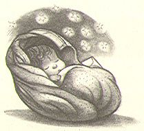

|  |
Mr. and Mrs. Dursley, of number
four, Privet Drive, were proud to say that they were perfectly normal,
thank you very much. They were the last people you'd expect to be
involved in anything strange or mysterious, because they just didn't
hold with such nonsense.
Mr. Dursley was the director of a firm called Grunnings, which made drills. He was a big, beefy man with hardly any neck, although he did have a very large mustache. Mrs. Dursley was thin and blonde and had nearly twice the usual amount of neck, which came in very useful as she spent so much of her time craning over garden fences, spying on the neighbors. The Dursleys had a small son called Dudley and in their opinion there was no finer boy anywhere. The Dursleys had everything they wanted, but they also had a secret, and their greatest fear was that somebody would discover it. They didn't think they could bear it if anyone found out about the Potters... |
This page was built by Nancyyy Wang